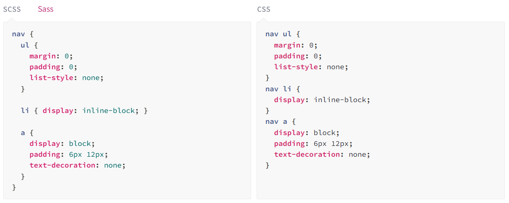
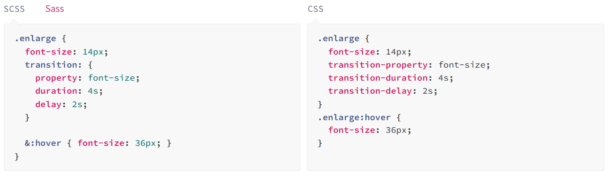

OTHERS TOOLS FOR SASS
Sass Preprocessing
CSS is enough to handle a simple stylesheet but if the stylesheets are larger and more complex, they are harder to maintain.
Preprocessor can help in this case. Sass provides some extended features that are not available in CSS like variables, nesting, mixins, inheritance and other nifty goodies that make it compatible to handle all type of stylesheets.
Sass Nesting
Normally HTML is written in a clear nested and visual hierarchy while CSS is not.
Sass facilitates you to nest your CSS selector in a way that follows the same visual hierarchy of your HTML. You should very careful while nesting because overly nested rules may cause complexity and it proves hard to maintain.


Sass mixin arguments
The mixin arguments are SassScript values that are passed when mixin is included and are available as variable.
The argument is a name of a variable separated by a comma while defining a mixin. There are two types of mixin arguments in Sass.
- Keyword Arguments
- Variable Arguments

SASS Passing content block to a mixin
The content blocks are passed to the mixin for the placement inside the styles. This functionality is added in Sass version 3.2. Styles are included into the mixin in the @content directive location.
The block of content is specified in the scope and the scope is passed in the mixin where block is defined.